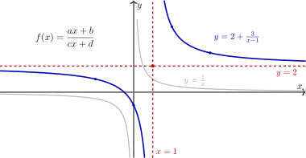
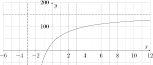
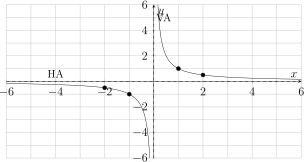
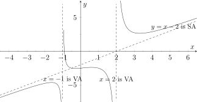
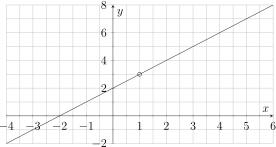

Hoofdstuk 3Rationale functies

Leerplandoelstellingen (GO! Navigator)
Gevorderde wiskunde (WD3_06.08)
-
• WD3_06.08.17 (MD 06.08.09) De leerlingen lossen vergelijkingen en ongelijkheden grafisch op.
-
• WD3_06.08.18 (MD 06.08.13) De leerlingen lossen eenvoudige veeltermvergelijkingen, rationale vergelijkingen, irrationale vergelijkingen, exponentiële vergelijkingen, logaritmische vergelijkingen en goniometrische vergelijkingen algebraı̈sch op.
-
– afbakening: deling van veeltermen
-
– afbakening: deling door \((x-a)\)
-
-
• WD3_06.08.19 De leerlingen lossen eenvoudige veeltermongelijkheden en rationale ongelijkheden algebraı̈sch op.
-
– afbakening: tekenonderzoek
-
-
• WD3_06.08.21 (MD 06.08.07) De leerlingen leggen het verband tussen de grafiek en het voorschrift van een functie en haar kenmerken.
-
– afbakening: veeltermfuncties, rationale functies, (elementaire) irrationale functies, exponentiële functies, logaritmische functies \(f(x)=\log _a(x)\), goniometrische functies \(f(x)=\cos x\) en \(f(x)=\tan x\), cyclometrische functies, absolute waardenfunctie, meervoudig functievoorschrift
-
– afbakening: domein, bereik, nulwaarden, tekenverloop, stijgen/dalen/constant, extrema, constante/toenemende/afnemende stijging/daling, symmetrie, periode, amplitude, asymptotisch gedrag, gedrag op oneindig
-
-
• WD3_06.08.26 (MD 06.08.16) De leerlingen bepalen grafisch en algebraı̈sch limieten van functies en analyseren het asymptotisch gedrag.
-
– afbakening: continuı̈teit
-
– afbakening: horizontaal, verticaal en schuin asymptotisch gedrag
-
Didactische uitwerking: rationale vergelijkingen, rationale ongelijkheden, rationale functies en homografische functies, domein en bereik, nulwaarden en polen, tekenverloop, grafisch en algebraı̈sch oplossen, stijgen en dalen, Euclidische deling van veeltermen, benaderen van rationale functies door veeltermfuncties, verticale, horizontale en schuine asymptoten, en toepassingen van rationale functies in context.
I Rationale vergelijkingen
1 Definitie
Een rationale vergelijking is een vergelijking waarbij de onbekende(n) optreden in een noemer.
2 Voorbeeld en methode
Beschouw:
\[ \frac {1}{x+2}+\frac {4}{3x-4}=1 \]
-
1. Bestaansvoorwaarden opstellen (BV)
Noemers mogen niet nul zijn:\[ x+2\neq 0 \quad \text {en} \quad 3x-4\neq 0 \]
dus
\[ x\neq -2 \quad \text {en} \quad x\neq \frac {4}{3}. \]
-
2. Noemers wegwerken
\(\seteqnumber{0}{}{0}\)
Vermenigvuldig beide leden met het k.g.v. van de noemers, namelijk \((x+2)(3x-4)\):\begin{align*} &&\left (\frac {1}{x+2}+\frac {4}{3x-4}\right )(x+2)(3x-4) &= 1\cdot (x+2)(3x-4) \\ \iff &&(3x-4) + 4(x+2) &= (x+2)(3x-4). \end{align*}
-
3. Bekomen veeltermvergelijking oplossen
\(\seteqnumber{0}{}{0}\)\begin{align*} &&3x-4 + 4x + 8 &= (x+2)(3x-4) \\ \iff &&7x+4 &= 3x^2+2x-8 \\ \iff &&0 &= 3x^2-5x-12. \end{align*} Discriminant:
\[ D = (-5)^2 - 4\cdot 3\cdot (-12)=25+144=169=13^2. \]
Oplossingen:
\[ x=\frac {5-13}{6}=-\frac {4}{3} \qquad \text {of} \qquad x=\frac {5+13}{6}=3. \]
-
4. BV controleren en \(V\) noteren
Beide oplossingen voldoen aan de bestaansvoorwaarden (\(x\neq -2\) en \(x\neq \frac {4}{3}\)), dus:\[ V=\left \{-\frac {4}{3},\,3\right \}. \]
3 Grafisch controleren m.b.v. GRM
y=\(Y_1=\dfrac {1}{X+2}+\dfrac {4}{3X-4}\)
\(Y_2=1\)
De oplossingen zijn de x-coördinaten van de snijpunten van de grafieken van \(y_1\) en \(y_2\).
Controle: de snijpunten liggen bij
\[ x=-\frac {4}{3}\quad \text {en}\quad x=3. \]
4 Extra voorbeelden
Los op in \(\R \)
-
(a) \(\displaystyle \frac {4}{x+2}+\frac {6}{x+3}=\frac {37}{x^2+5x+6}\)
BV: \(x\neq -2\) en \(x\neq -3\) (want \(x^2+5x+6=(x+2)(x+3)\))
\(\seteqnumber{0}{}{0}\)\begin{align*} \Leftrightarrow \quad \left (\frac {4}{x+2}+\frac {6}{x+3}\right )(x+2)(x+3) &= \frac {37}{(x+2)(x+3)}(x+2)(x+3)\\ \Leftrightarrow \quad 4(x+3)+6(x+2) &= 37\\ \Leftrightarrow \quad 4x+12+6x+12 &= 37\\ \Leftrightarrow \quad 10x+24 &= 37\\ \Leftrightarrow \quad 10x &= 13\\ \Leftrightarrow \quad x &= \frac {13}{10} \end{align*}
\[ V=\left \{\frac {13}{10}\right \}. \]
-
(b) \(\displaystyle \frac {x-2}{x+2}+\frac {x+2}{x-2}=\frac {4+6x}{x^2-4}\)
BV: \(x\neq -2\) en \(x\neq 2\) (want \(x^2-4=(x-2)(x+2)\))
\(\seteqnumber{0}{}{0}\)\begin{align*} \Leftrightarrow \quad \left (\frac {x-2}{x+2}+\frac {x+2}{x-2}\right )(x+2)(x-2) &= \frac {4+6x}{(x+2)(x-2)}(x+2)(x-2)\\ \Leftrightarrow \quad (x-2)^2+(x+2)^2 &= 4+6x\\ \Leftrightarrow \quad (x^2-4x+4)+(x^2+4x+4) &= 4+6x\\ \Leftrightarrow \quad 2x^2+8 &= 4+6x\\ \Leftrightarrow \quad 2x^2-6x+4 &= 0\\ \Leftrightarrow \quad x^2-3x+2 &= 0\\ \Leftrightarrow \quad (x-1)(x-2) &= 0\\ \Leftrightarrow \quad x=1 \ \text {of}\ x=2 \end{align*}
BV controleren: \(x=2\) mag niet, dus
\[ V=\{1\}. \]
5 Oefeningen
p95 nr27
II Rationale ongelijkheden
1 Voorbeeld en methode
Los op:
\[ \frac {3x-1}{12x^2-6x-6}\ge 0 \]
-
1. Standaardvorm
De ongelijkheid staat al in standaardvorm: \(\dfrac {T(x)}{N(x)}\ge 0\). -
2. Nulwaarden van teller \(T\) en noemer \(N\) bepalen
\[ T(x)=3x-1 \quad \Rightarrow \quad 3x-1=0 \Rightarrow x=\frac {1}{3}. \]
\[ N(x)=12x^2-6x-6=6(2x^2-x-1)=6(2x+1)(x-1). \]
\[ N(x)=0 \Rightarrow x=-\frac {1}{2}\ \text {of}\ x=1. \]
Dit zijn de polen (waarden waarvoor de breuk niet bestaat).
-
3. Tekenverloop opstellen
Kritieke waarden in volgorde: \(-\dfrac {1}{2} < \dfrac {1}{3} < 1\).\[ \begin {array}{c|ccccccc} x & & -\tfrac 12 & & \tfrac 13 & & 1 & \\ \hline T(x) & - & & - & 0 & + & & + \\ N(x) & + & 0 & - & & - & 0 & + \\ \hline f(x)=\dfrac {T(x)}{N(x)} & - & | & + & 0 & - & | & + \end {array} \]
-
4. Ongelijkheid toepassen en \(V\) noteren
\(\dfrac {T(x)}{N(x)}\ge 0\) betekent: positief of nul.
Nul komt voor bij \(x=\dfrac {1}{3}\) (mag), polen \(x=-\dfrac {1}{2}\) en \(x=1\) (mogen niet).\[ V= \left ]-\frac {1}{2},\,\frac {1}{3}\right ] \cup \left ]1,\,+\infty \right [. \]
2 Grafisch controleren m.b.v. GRM
y=\(Y_1=\dfrac {3X-1}{12X^2-6X-6}\)
We zoeken waar \(Y_1\ge 0\). Dat zijn de x-waarden waarvoor de grafiek van \(Y_1\) boven (of op) de \(x\)-as ligt.
Bepaal eerst het nulpunt van \(Y_1\) (snijpunt met de \(x\)-as):
\[ x=\frac {1}{3}. \]
De grafiek heeft verticale asymptoten (polen) bij
\[ x=-\frac {1}{2}\quad \text {en}\quad x=1, \]
want daar is de noemer nul. Die waarden horen niet bij de oplossing.
Je ziet dat \(Y_1\ge 0\) op
\[ V=\left ]-\frac {1}{2},\,\frac {1}{3}\right ]\cup \left ]1,\,+\infty \right [. \]
3 Extra voorbeeld
Los op:
\[ \frac {x^3-8x^2+5x+50}{x^3-x^2-4x+4}\le 0 \]
-
1. Nulwaarden bepalen van teller \(T\) en noemer \(N\)
T:
\(\seteqnumber{0}{}{0}\)\begin{align*} x^3-8x^2+5x+50 &= 0\\ (x-5)(x^2-3x-10) &= 0\\ (x-5)(x-5)(x+2) &= 0\\ (x-5)^2(x+2) &= 0 \end{align*}
\[ \Rightarrow \text {nulw T:}\ 5, -2. \]
N:
\(\seteqnumber{0}{}{0}\)\begin{align*} x^3-x^2-4x+4 &= 0\\ x^2(x-1)-4(x-1) &= 0\\ (x-1)(x^2-4) &= 0\\ (x-1)(x-2)(x+2) &= 0 \end{align*}
\[ \Rightarrow \text {nulw N:}\ 1, 2, -2. \]
-
2. Tekenverloop opstellen
Kritieke waarden (in volgorde):
\[ -2,\ 1,\ 2,\ 5. \]
\[\begin {array}{r@{\,}c|ccccccccc} & x & & -2 & & 1 & & 2 & & 5 & \\ \hline \ldelim \{{2}{*}[T] & (x-5)^2 & + & + & + & + & + & + & + & 0 & + \\ & x+2 & - & 0 & + & + & + & + & + & + & + \\ \hline \ldelim \{{3}{*}[N] & x-1 & - & - & - & 0 & + & + & + & + & + \\ & x-2 & - & - & - & - & - & 0 & + & + & + \\ & x+2 & - & 0 & + & + & + & + & + & + & + \\ \hline & f(x) & + & / & + & | & - & | & + & 0 & + \\ & & & & & \circ & \rule [3pt]{24pt}{1pt} & \circ & & \bullet & \end {array}\]
-
3. Ongelijkheid toepassen en \(V\) noteren
We zoeken \(f(x)\le 0\): dus negatief of nul.
Negatief op \(\,]1,2[\). Nul bij \(x=5\).
Punten waar \(N=0\) (\(x=-2,1,2\)) horen niet bij de oplossing.\[ V=\,]1,2[\,\cup \,\{5\}. \]
4 Oefeningen
p95 nr28
III Rationale functies
1 Definitie
Een rationale functie \(f\) is het quotiënt van twee veeltermfuncties (waarbij de noemer niet de nulveelterm is).
Voorschrift: \(f(x)=\dfrac {g(x)}{h(x)}\) waarbij \(g\) en \(h\) veeltermfuncties zijn en \(h(x)\neq 0\).
Voorbeeld: \(f(x)=\dfrac {2x^2+7x+4}{x-3}\)
2 Voorbeelden
Voorbeeld 1: konijnenpopulatie
De grootte van een konijnenpopulatie wordt beschreven door
\[ f(t)=\frac {150t+90}{t+3}, \]
met
\[ t=\text {tijd in maanden},\qquad f(t)=\text {aantal konijnen}. \]
-
(a) Schets de grafiek van \(f(t)\) (voor \(t\ge 0\)).
-
(b) Hoeveel konijnen zijn er de 6de maand bijgekomen?
-
(c) Na hoeveel maanden zijn er \(135\) konijnen?
-
(d) Hoeveel konijnen telt deze populatie op lange termijn?
-
(a) Grafiek (kenmerken)
\(\seteqnumber{0}{}{0}\)
\begin{align*} f(t) &= \frac {150t+90}{t+3} = \frac {150(t+3)-360}{t+3} = 150-\frac {360}{t+3}. \end{align*} Dus:
-
• verticale asymptoot: \(t=-3\),
-
• horizontale asymptoot: \(y=150\),
-
• voor \(t\ge 0\): \(f(t)\) stijgt en nadert \(150\) langs onder.
Handige punten:
\[ f(0)=\frac {90}{3}=30,\qquad f(6)=\frac {990}{9}=110. \]
-
-
(b) Bijgekomen de 6de maand
\(\seteqnumber{0}{}{0}\)\begin{align*} f(5) &= \frac {150\cdot 5+90}{5+3} = \frac {840}{8} = 105\\ f(6) &= 110\\ \Delta &= 110-105=5. \end{align*} Er zijn \(5\) konijnen bijgekomen.
-
(c) Wanneer \(135\) konijnen?
\(\seteqnumber{0}{}{0}\)\begin{align*} \frac {150t+90}{t+3} &= 135\\ 150t+90 &= 135(t+3)\\ 150t+90 &= 135t+405\\ 15t &= 315\\ t &= 21. \end{align*} Na \(21\) maanden zijn er \(135\) konijnen.
-
(d) Op lange termijn
\[ \lim _{t\to +\infty } f(t)=150. \]
Op lange termijn nadert de populatie naar \(150\) konijnen.
Voorbeeld 2
Opgave: Bespreek \(f(x)=\dfrac {1}{x}\)

-
1. Domein
\(\seteqnumber{0}{}{0}\)\begin{align*} x\neq 0 \qquad \Rightarrow \qquad \dom f=\mathbb {R}\setminus \{0\}. \end{align*}
-
2. Bereik
\(\seteqnumber{0}{}{0}\)\begin{align*} \frac {1}{x}\neq 0 \qquad \Rightarrow \qquad \ber f=\mathbb {R}\setminus \{0\}. \end{align*}
-
3. Nulwaarden
Geen, want \(f(x)=0\) heeft geen oplossing. -
4. Polen
Nulwaarde van de noemer: \(x=0\). -
5. Tekenverloop
\[ \renewcommand {\arraystretch }{1.15} \begin {array}{c|ccccccc} x && && 0 && &\\ \hline f(x)=\dfrac {1}{x} && - && | && +& \end {array} \]
-
6. Asymptoten
Een asymptoot van een functie is een rechte lijn waartoe de grafiek van de functie nadert wanneer de \(x\)- of \(y\)-coördinaat naar oneindig gaat.-
• Horizontale asymptoten (HA): \(y=0\) (de \(x\)-as)
\[ \lim _{x\to +\infty }\frac {1}{x}=0, \qquad \lim _{x\to -\infty }\frac {1}{x}=0. \]
-
• Verticale asymptoten (VA): \(x=0\) (de \(y\)-as)
\[ \lim _{x\to 0^+}\frac {1}{x}=+\infty , \qquad \lim _{x\to 0^-}\frac {1}{x}=-\infty . \]
-
-
7. Stijgen & dalen
\[ \renewcommand {\arraystretch }{1.2} \begin {array}{c|c|c|c} x & (-\infty ,0) & 0 & (0,+\infty ) \\ \hline f(x) & \searrow & \text {//} & \searrow \end {array} \]
-
8. Grafiek: \(f(x)=\dfrac {1}{x}\) is een hyperbool
3 Stijgen en dalen
Definitie
Een functie \(f\) is strikt stijgend in \([a,b]\) als en slechts als
-
1. \(f\) is gedefinieerd in \([a,b]\),
-
2. voor alle \(x_1,x_2\in [a,b]\) geldt:
\[ x_1<x_2 \ \Rightarrow \ f(x_1)<f(x_2). \]
Een functie \(f\) is strikt dalend in \([a,b]\) als en slechts als
-
1. \(f\) is gedefinieerd in \([a,b]\),
-
2. voor alle \(x_1,x_2\in [a,b]\) geldt:
\[ x_1<x_2 \ \Rightarrow \ f(x_1)>f(x_2). \]
Eigenschap
Voor alle \(a,b\in \mathbb {R}_0^+\) geldt:
\[ a<b \ \Leftrightarrow \ \frac {1}{a}>\frac {1}{b}. \]
Gevolg
De functie \(f:x\mapsto \dfrac {1}{x}\) is strikt dalend in \(\mathbb {R}_0^+\) en ook strikt dalend in \(\mathbb {R}_0^-\).
IV Homografische functies
1 Definitie
Een homografische functie is een functie van de vorm
\[ f(x)=\frac {ax+b}{cx+d} \]
met \(c\neq 0\) en \(ad\neq bc\).
2 Opmerkingen
-
1. Als \(c=0\), dan is
\[ f(x)=\frac {ax+b}{d}=\frac {a}{d}\,x+\frac {b}{d}, \]
dus een eerstegraadsfunctie.
-
2. Als \(ad=bc\), dan is \(f\) een constante functie. Inderdaad:
\[ ad=bc \ \Rightarrow \ b=\frac {ad}{c} \ \Rightarrow \ ax+b=ax+\frac {ad}{c} =\frac {a}{c}(cx+d), \]
zodat
\[ f(x)=\frac {ax+b}{cx+d} =\frac {\frac {a}{c}(cx+d)}{cx+d} =\frac {a}{c}. \]
3 Verband tussen een homografische functie en \(y=\dfrac {1}{x}\)
\(\seteqnumber{0}{}{0}\)\begin{align*} f(x) &=\frac {ax+b}{cx+d}\\ &=\frac {ax+\dfrac {ad}{c} + b - \dfrac {ad}{c}}{cx+d}\\ &=\frac {a\left (x+\frac {d}{c}\right )+b-\frac {ad}{c}}{c\left (x+\frac {d}{c}\right )}\\ &=\frac {a}{c}+\frac {b-\frac {ad}{c}}{c\left (x+\frac {d}{c}\right )}\\ &=\frac {a}{c}+\frac {bc-ad}{c^2}\cdot \frac {1}{x+\frac {d}{c}}. \end{align*}
Stel nu
\[ p=-\frac {d}{c},\qquad q=\frac {a}{c},\qquad k=\frac {bc-ad}{c^2}. \]
Dan wordt
\[ f(x)=\frac {k}{x-p}+q. \]
Een homografische functie ontstaat dus uit \(y=\dfrac {1}{x}\) door:
-
• horizontaal verschuiven over \(p\) eenheden (naar rechts als \(p>0\), naar links als \(p<0\));
-
• schalen in \(y\)-richting met factor \(k\) (als \(k<0\): spiegeling t.o.v. de \(x\)-as);
-
• verticaal verschuiven over \(q\) eenheden (omhoog als \(q>0\), omlaag als \(q<0\)).
4 Voorbeeld 1
Bespreek: \(f(x)=\dfrac {2x+1}{x-1}\)
-
1. Herschrijven in de vorm \(\dfrac {k}{x-p}+q\)
\(\seteqnumber{0}{}{0}\)\begin{align*} f(x)=\frac {2x+1}{x-1} &=\frac {2(x-1)+3}{x-1}\\ &=2+\frac {3}{x-1}. \end{align*} Dus
\[ f(x)=\frac {k}{x-p}+q \quad \text {met}\quad k=3,\ p=1,\ q=2. \]
Vanuit \(y=\dfrac {1}{x}\):
-
• verschuiven evenwijdig met de \(x\)-as: \(1\) naar rechts \(\Rightarrow y=\dfrac {1}{x-1}\),
-
• schalen evenwijdig met de \(y\)-as met factor \(3\) \(\Rightarrow y=\dfrac {3}{x-1}\),
-
• verschuiven evenwijdig met de \(y\)-as: \(2\) naar boven \(\Rightarrow y=\dfrac {3}{x-1}+2\).
-
-
2. Kenmerken
-
• Domein:
\[ x-1\neq 0 \Leftrightarrow x\neq 1 \qquad \Rightarrow \qquad \dom f=\mathbb {R}\setminus \{1\}. \]
-
• Bereik:
\[ f(x)=2+\frac {3}{x-1}\neq 2 \qquad \Rightarrow \qquad \ber f=\mathbb {R}\setminus \{2\}. \]
-
• Nulwaarden:
\(\seteqnumber{0}{}{0}\)\begin{align*} f(x)=0 &\Leftrightarrow 2x+1=0\\ &\Leftrightarrow x=-\frac {1}{2}. \end{align*}
-
• Polen: \(x=1\).
-
• Asymptoten:
\[ \text {VA: } x=1, \qquad \text {HA: } y=2. \]
\[ \lim _{x\to 1^-}f(x)=-\infty , \qquad \lim _{x\to 1^+}f(x)=+\infty , \qquad \lim _{x\to \pm \infty }f(x)=2. \]
-
• Tekenverloop:
\[ \renewcommand {\arraystretch }{1.2} \begin {array}{c|c|c|c|c} x & (-\infty ,-\tfrac 12) & -\tfrac 12 & (-\tfrac 12,1) & 1 \ \ (1,+\infty )\\ \hline 2x+1 & - & 0 & + & \ \ +\\ x-1 & - & & - & 0 \ \ +\\ \hline f(x)=\dfrac {2x+1}{x-1} & + & 0 & - & \text {//} \ \ + \end {array} \]
-
• Stijgen/dalen:
\[ \renewcommand {\arraystretch }{1.2} \begin {array}{c|c|c|c} x & (-\infty ,1) & 1 & (1,+\infty )\\ \hline f(x) & \searrow & \text {//} & \searrow \end {array} \]
\(f\) is strikt dalend op \((-\infty ,1)\) en op \((1,+\infty )\).
-
5 Voorbeeld 2
Bepaal het voorschrift van de homografische functie \(f\) met:
\[ \text {pool: }x=-2,\qquad \text {nulpunt: }x=4,\qquad \lim _{x\to +\infty } f(x)=3. \]
Omdat \(\lim _{x\to +\infty } f(x)=3\), is de horizontale asymptoot \(y=3\).
Met pool \(x=-2\) schrijven we:
\[ f(x)=\frac {k}{x+2}+3. \]
Het nulpunt is \(x=4\), dus \(f(4)=0\):
\(\seteqnumber{0}{}{0}\)\begin{align*} 0 &= \frac {k}{4+2} + 3\\ 0 &= \frac {k}{6} + 3\\ \frac {k}{6} &= -3\\ k&=-18. \end{align*} Dus
\[ f(x)=\frac {-18}{x+2} + 3. \]
Schrijf als één breuk:
\(\seteqnumber{0}{}{0}\)\begin{align*} f(x) &=\frac {3(x+2)-18}{x+2}\\ &=\frac {3x+6-18}{x+2}\\ &=\frac {3x-12}{x+2}. \end{align*}
\[ \boxed {\,f(x)=\dfrac {3x-12}{x+2}\,} \]
6 Oefeningen
p91 nr10, 11, 12
V Rationale functies benaderen door veeltermfuncties
1 Idee
Voor grote waarden van \(x\) kan je een rationale functie benaderen door een veeltermfunctie via de Euclidische deling van veeltermen:
\[ f(x)=\frac {P(x)}{Q(x)} = S(x) + \frac {R(x)}{Q(x)}, \]
waarbij \(S(x)\) het quotiënt is en \(R(x)\) de rest. Omdat \(\deg R < \deg Q\), geldt:
\[ \frac {R(x)}{Q(x)} \to 0 \quad \text {als } x\to \pm \infty , \]
dus voor grote \(|x|\) is \(f(x)\approx S(x)\).
2 Voorbeeld
We benaderen
\[ f(x)=\frac {x^4-2x^3+x^2-1}{x^2+1} \]
door een veeltermfunctie voor grote \(|x|\).
\[ \begin {array}{ccccccc|l} & & x^4 & - 2x^3 & + x^2 & + 0x & - 1 & x^2 + 1 \\ \cline {8-8} - & & x^4 & & + x^2 & & & x^2 - 2x \\ \cline {3-7} & & & - 2x^3 & + 0x^2 & + 0x & - 1 \\ - & & & - 2x^3 & & - 2x & & \\ \cline {4-7} & & & & & 2x & - 1 & \end {array} \]
\[ \Rightarrow \qquad x^4-2x^3+x^2-1 = (x^2+1)(x^2-2x) + (2x-1), \]
dus
\[ f(x)=x^2-2x+\frac {2x-1}{x^2+1}. \]
Voor grote \(|x|\) is \(\dfrac {2x-1}{x^2+1}\) heel klein, dus
\[ f(x)\approx x^2-2x \quad \text {voor grote } |x|. \]
3 Grafisch controleren m.b.v. GRM
y=\(Y_1=\dfrac {X^4-2X^3+X^2-1}{X^2+1}\)
\(Y_2=X^2-2X\)
Voor grote \(|X|\) liggen de grafieken van \(Y_1\) en \(Y_2\) bijna op elkaar.
4 Oefeningen
p92 nr13 (Opgave: Benader volgende functies en controleer m.b.v. ICT.)
VI Asymptoten bij rationale functies
1 Definitie
Als de grafiek van een functie punten bevat die oneindig ver gelegen zijn en de afstand van die punten tot een rechte nadert daarbij tot \(0\), dan noemen we deze rechte een asymptoot.
2 Grafisch voorbeeld
y=\(\seteqnumber{0}{}{0}\)
\begin{align*}
Y_1&=\dfrac {X^3-3X^2+2X+5}{(X+1)(X-2)}\\ Y_2&=X-2 &\text {(Schuine asymptoot)}
\end{align*}
2nd prgm 4:Vertical -1 enter
2nd prgm 4:Vertical 2 enter
Voor grote \(|X|\) liggen de grafieken van \(Y_1\) en \(Y_2\) bijna op elkaar.

3 Verticale asymptoten (VA)
\(x=a\in \mathbb {R}\) is een verticale asymptoot (VA)
\[ \Leftrightarrow \quad \lim _{x\to a} f(x)=\pm \infty . \]
Tip: Dit verkrijg je als de noemer naar \(0\) nadert en de teller niet.
Opmerking: Bij een verwijderbaar punt (gat) wordt zowel teller als noemer \(0\). Dan heeft de grafiek geen verticale asymptoot op die \(x\)-waarde. Je kan dit herkennen door in \(T\) en \(N\) een gemeenschappelijke factor weg te delen.
4 Voorbeeld: verwijderbare discontinuı̈teit (geen VA)
\[ f(x)=\frac {x^2+x-2}{x-1} \]
\(\seteqnumber{0}{}{0}\)\begin{align*} x^2+x-2 &= (x-1)(x+2)\\ \Rightarrow \quad f(x) &= \frac {(x-1)(x+2)}{x-1}=x+2 \qquad (x\neq 1) \end{align*}
Domein: \(D_f=\mathbb {R}\setminus \{1\}\).
De grafiek is de rechte \(y=x+2\), maar met een gat bij \(x=1\). Dus er is geen verticale asymptoot.

5 Horizontale asymptoten (HA)
\(y=b\) is een horizontale asymptoot (HA)
\[ \Leftrightarrow \quad \lim _{x\to \pm \infty } f(x)=b\in \mathbb {R}. \]
Twee mogelijkheden (voor rationale functies \(f(x)=\dfrac {T(x)}{N(x)}\))
-
1. \(\deg (T)<\deg (N)\)
Dan is\[ \lim _{x\to \pm \infty }\frac {T(x)}{N(x)}=0 \]
en dus is \(y=0\) een HA.
-
2. \(\deg (T)=\deg (N)\)
Dan is de HA gelijk aan de verhouding van de leidende coëfficiënten:\[ \lim _{x\to \pm \infty }\frac {a_nx^n+\cdots }{b_nx^n+\cdots }=\frac {a_n}{b_n} \qquad \Rightarrow \qquad y=\frac {a_n}{b_n}\ \text {is HA.} \]
Besluit: Als \(\deg (T)>\deg (N)\), dan heeft de functie geen horizontale asymptoot.
6 Schuine asymptoten (SA)
\(y=mx+q\) met \(m\neq 0\) en \(m,q\in \mathbb {R}\) is een schuine asymptoot (SA)
\[ \Leftrightarrow \quad \lim _{x\to \pm \infty }\Bigl (f(x)-(mx+q)\Bigr )=0. \]
Dit is het geval als het quotiënt bij de Euclidische deling een eerstegraadsfunctie is, m.a.w.
\[ \deg (T)=\deg (N)+1. \]
7 Voorbeeld
Bepaal de eventuele asymptoten van
\[ f(x)=\frac {2x^2+3x-5}{x-2}. \]
-
1. Verticale asymptoot (VA)
Nulwaarde van de noemer:\[ x-2=0 \Rightarrow x=2. \]
Controleer of dit geen verwijderbaar punt is: bereken \(T(2)\):
\[ T(2)=2\cdot 2^2+3\cdot 2-5=8+6-5=9\neq 0. \]
Dus \(x=2\) is een pool en bijgevolg een VA.
\[ \boxed {x=2\ \text {is VA}.} \]
-
2. Horizontale asymptoot (HA)
\[ \deg (T)=2,\qquad \deg (N)=1 \quad \Rightarrow \quad \deg (T)=\deg (N)+1. \]
Dus: \(\boxed {\text {geen HA}}\) en we zoeken een schuine asymptoot.
-
3. Schuine asymptoot (SA) via Euclidische deling
\[ \renewcommand {\arraystretch }{1.2} \setlength {\arraycolsep }{2pt} \begin {array}{rrr|l} 2x^2 & +3x & -5 & x-2 \\ \cline {4-4} -2x^2 & +4x & & 2x+7 \\ \cline {1-3} & 7x & -5 & \\ & -7x & +14 & \\ \cline {2-3} & & 9 & \end {array} \]
Dus
\[ \frac {2x^2+3x-5}{x-2}=2x+7+\frac {9}{x-2}. \]
Omdat \(\dfrac {9}{x-2}\to 0\) voor \(x\to \pm \infty \), volgt:
\[ \boxed {y=2x+7\ \text {is SA}.} \]
Besluit: VA: \(x=2\), HA: geen, SA: \(y=2x+7\).
8 Oefeningen
p89 nr2 p92 nr13, p93 nr17, 18 p96 nr31, 32, 34
VII Toepassingen
1 Voorbeeld: concentratie van een medicijn
De concentratie van een medicijn wordt beschreven door
\[ C(t)=\frac {12t}{t^2+2}, \]
met \(C\) in \(\text {mg}/\ell \) en \(t\) in uren (met \(t\ge 0\)). Het medicijn is werkzaam bij een concentratie vanaf \(2 \text { mg}/\ell \).
-
(a) Wanneer moet de 2e injectie toegediend worden?
We nemen aan dat het medicijn werkt vanaf \(C(t)\ge 2\).
\(\seteqnumber{0}{}{0}\)\begin{align*} C(t)\ge 2 &\Leftrightarrow \frac {12t}{t^2+2}\ge 2\\ &\Leftrightarrow \frac {12t-2(t^2+2)}{t^2+2}\ge 0\\ &\Leftrightarrow \frac {-2t^2+12t-4}{t^2+2}\ge 0. \end{align*}
Omdat \(t^2+2>0\) voor alle \(t\), wordt dit:
\[ -2t^2+12t-4\ge 0 \Leftrightarrow t^2-6t+2\le 0. \]
Nulwaarden:
\(\seteqnumber{0}{}{0}\)\begin{align*} t^2-6t+2=0 &\Rightarrow t=\frac {6\pm \sqrt {36-8}}{2} =\frac {6\pm \sqrt {28}}{2} =3\pm \sqrt {7}. \end{align*}
\[ t_1=3-\sqrt 7\approx 0.35, \qquad t_2=3+\sqrt 7\approx 5.64. \]
\[ \renewcommand {\arraystretch }{1.2} \begin {array}{c|ccccc} t & & 0.35 & & 5.64 & \\ \hline -2t^2+12t-4 & - & 0 & + & 0 & -\\ t^2+2 & + & + & + & + & +\\ \hline \dfrac {-2t^2+12t-4}{t^2+2} & - & 0 & + & 0 & - \end {array} \]
Dus \(C(t)\ge 2\) voor \(t\in [t_1,t_2]\).
In context (\(t\ge 0\)):\[ C(t)\ge 2 \quad \text {voor} \quad t\in [3-\sqrt 7,\,3+\sqrt 7]. \]
Interpretatie (afgerond):
\[ 3-\sqrt 7\approx 0.35\text { u } \approx 21\text { min }15\text { s}, \qquad 3+\sqrt 7\approx 5.64\text { u } \approx 5\text { u }38\text { min }45\text { s}. \]
Antwoordzin: Na ongeveer \(5\text { u }38\text { min }45\text { s}\) daalt de concentratie terug onder \(2\), dus dan moet een 2e injectie toegediend worden.
-
(b) Concentratie op lange termijn
\[ \lim _{t\to +\infty } \frac {12t}{t^2+2}=0. \]
Antwoordzin: Op lange termijn verdwijnt de concentratie en nadert \(C(t)\) naar \(0\ \text {mg}/\ell \).
2 Oefeningen
p90 nr 3-9
probeer ook de extremumvraagstukken p94 nr20-22
extra uitdagingen p94 nr23-26